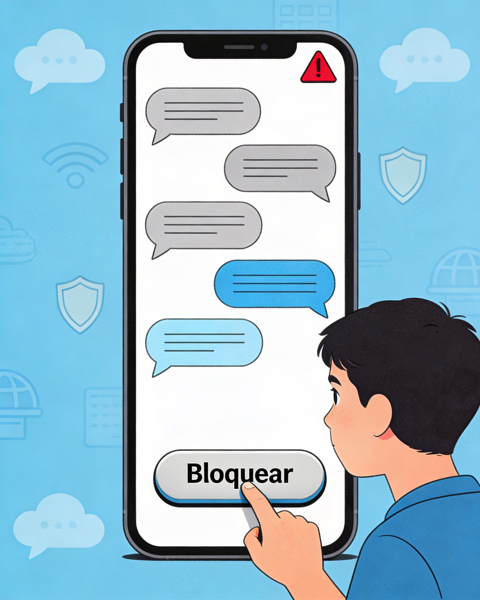
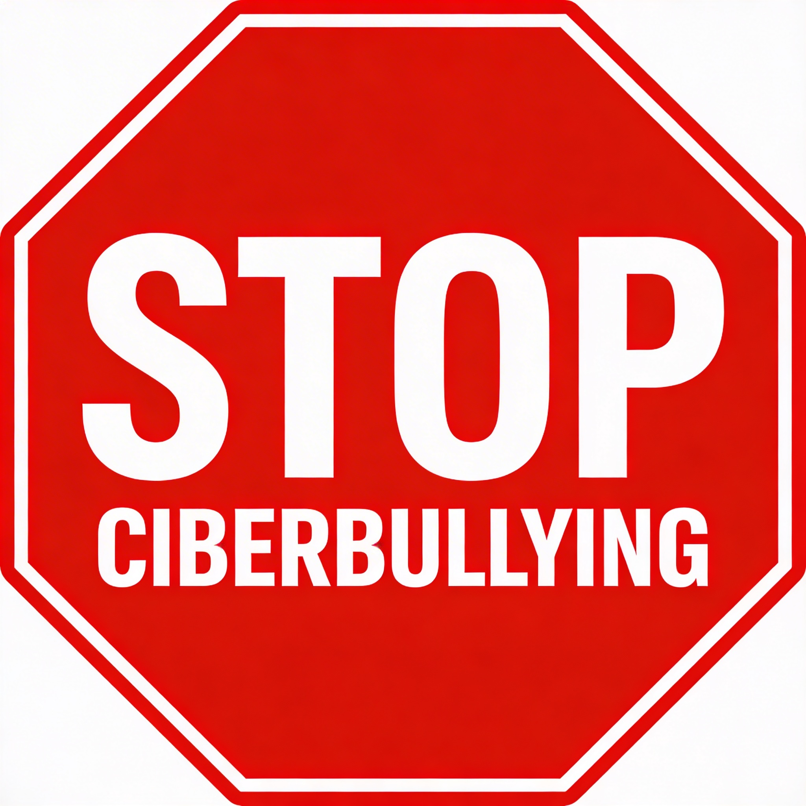

O que é o ciberbullying?
O ciberbullying é uma forma de violência em que alguém usa tecnologias digitais, como redes sociais, chats ou jogos online, para humilhar, ameaçar, insultar ou excluir outra pessoa, de forma intencional e repetida.
Tal como o bullying presencial, o ciberbullying afeta a dignidade, os direitos humanos e o bem-estar emocional das vítimas, especialmente de crianças e jovens.

Como podes agir contra o ciberbullying?
- Não partilhar, gostar ou comentar conteúdos que humilhem outras pessoas.
- Guardar provas (capturas de ecrã, mensagens) quando presenciares ciberbullying.
- Falar com um adulto de confiança (encarregado de educação, professor, psicólogo).
- Utilizar as opções de bloqueio e denúncia nas redes sociais e plataformas.
- Se fores vítima, lembra-te: nunca estás sozinho e pedir ajuda é um ato de coragem.
